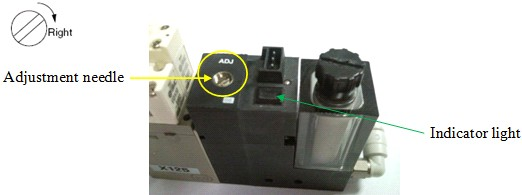
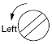

A1-1 How to adjust about vacuum sensor ( 1 )
Index unit vacuum sensor adjustment for NS-6000 / NS-7000 ( Analog type )
1. Clockwise turn rotation switch á 180o(from position B to A) and press on it to activate vacuum.
2. Place device on the suction nozzle(cup).
3. Turn ADJ Adjustment needle Clockwise(Right) until Indicator light LED is Off.

4. Turn ADJ Adjustment needle Anti-clockwise(Left) until Indicator light LED(Red) is On, then turn Anti-clockwise 1 to 1½ turn while LED On.

5. Remove device from suction nozzle, anti-clockwise turn rotation switch -180o(from position A to B) and press on it to de-activate vacuum.
* For small size devices, the pickup nozzle has a smaller diameter, and therefore, the negative pressure difference between with and without the device is small. With this, the detection can be unstable with the Basic Setting above. If the indicator lamp is Not OFF after the device is removed in the step 5, rotate the control needle to the right and stop when the lamp is OFF.